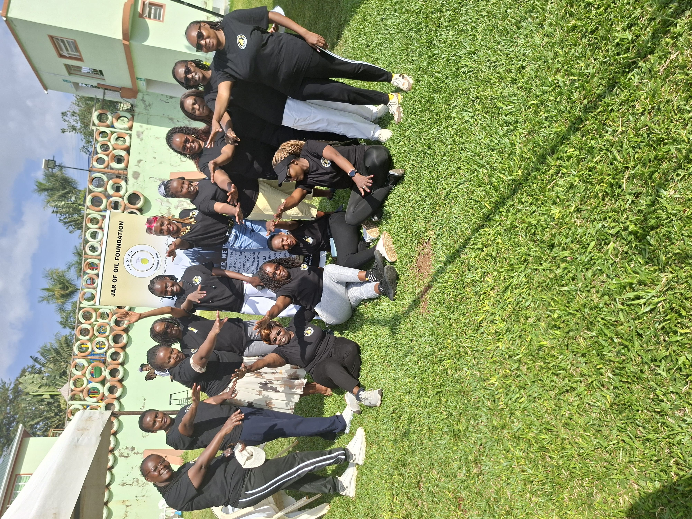
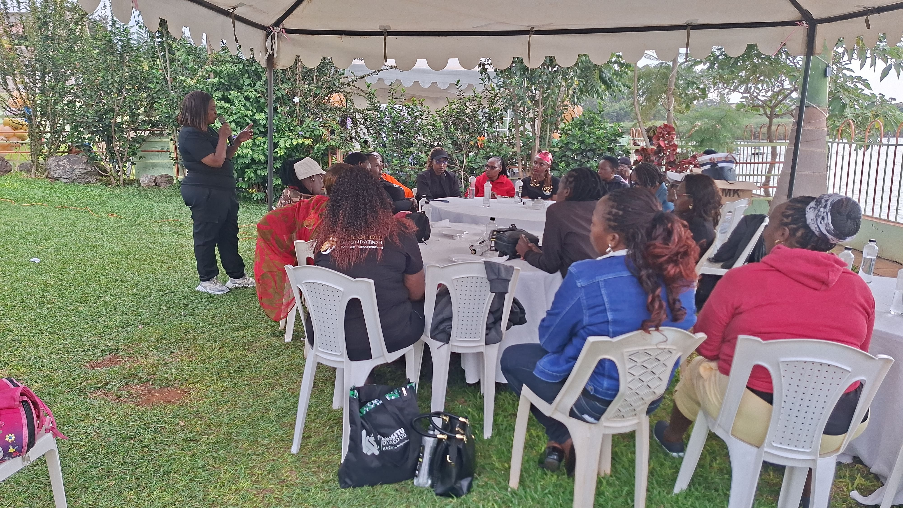
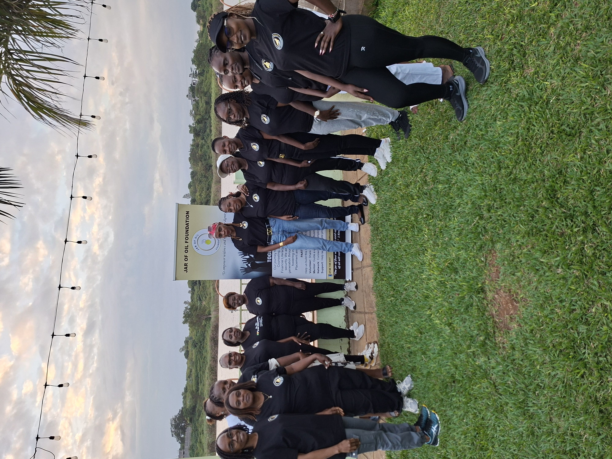

📍 Nairobi, Kenya,Africa
📧 jarofoilfoundation@gmail.com | ☎ +254 719 443 532


📍 Nairobi, Kenya,Africa
📧 jarofoilfoundation@gmail.com | ☎ +254 719 443 532

The Inua Mjane Campaign seeks to restore dignity, hope and empowerment to widows through practical support, encouragement, and community outreach. Together, we can remind every widow that she is seen, valued, and loved.
As Jar of Oil Foundation continues to grow, more life-changing initiatives will be added here.

Helping vulnerable children remain in school through educational support and mentorship.
Learn More →
Bringing hope through outreach events, food distribution and acts of compassion.
Learn More →
Equipping young widows with skills, mentorship and opportunities to thrive.
Learn More →New campaigns will be launched as God continues opening doors to serve.
Stay Tuned →